“Distante dalla Terra di Chiaromonte di Basilicata da sei miglia circa presso il fiume Sinno tra il paese di Sinisi e Noia scorgesi un vago, antico monastero di Frati Cisterciensi di S. Bernardo di Chiaravalle nominato Santa Maria del Sagittario per un miracoloso caso ivi successo; il quale raccontasi essere questo.
Andando a caccia un gentiluomo, che farsi sino a questo anno 1651, sono trascorsi più di 600 anni, per avventura si abbattè in una Cerva, alla quale tirandoli tre frecciate con l’arco niuna gli colse: ma le frecce ritornavano indietro: ecco che si accorge d’una bellissima figura di Maria relevata d’altezza di palmi quattro, che stava dentro un folto e grosso albero di castagna.
Atri dissero, che andando i Cacciatori di Chiaramente a cacciare in detta montagna fu ritrovata da cani una Cerva di bellissima sembianza, i cani, e veltri se li gittarono a piedi distesi in terra, e sommessi, con lambire la detta Cerva, e con farli vezzi come a costume di cani a loro Signori: e quantunque li Cacciatori havessero tirato delle saette per ammazzarla, e finirla, con tutto ciò le saette, e spiedi cadevano in terra senza punto colpire la Cerva. Onde atterriti i Cacciatori, credendo ciò essere cosa soprannaturale, li diedero addosso la Cerva, la quale non fu vista più; ma si vide bene una figura della Vergine Maria in un tronco di castagno in una cassetta tanto capace, quanto la Sacra figura di palmi quattro.
Ritornati i Cacciatori pieni di meraviglia in Chiaromonte, confessando il loro errore, subito senza punto tardare,fu ordinato una devota processione, e scalzi e battendosi, andarono nel luogo della caccia, e fu ritrovata la Santa figura di Maria riposta dentro il troncone del castagno. Presero i cittadini di Chiaromonte questa santa figura, e la condussero nella loro terra, e la mattina seguente si ritrovò nel luogo, da dove era stata presa nel bosco.
Un Conte poi volendoli fare, come già li fece una bellissima Chiesa in un luogo detto Bella Valle, in processione ve la fece condurre; e la mattina seguente si ritrovò nel primiero luogo. Il che visto, e considerato da tutti, vollero ivi ademplìre la volontà della Vergine, edificorno il Tempio, e Monasterio nelle Montagne di sopra, territorio di Chiaromonte.
Da molte persone li furo concessi e donati molti territori, e montagne come sono il Sicileo, le Zimeride, li territori di Ventrile, li Molini di Chiaromonte, la Montagna chiamata la Grottola, un ‘altra chiamata Cascianuova, un ‘altra chiamata lazzo della Puma, Magnano montagna, altri territori di vigne grandissimi, con alcune difese, e giardini che si possedono da detti Monaci Cisterciensi Nordici.
Si celebra la sua festa il dì 15 d’agosto con gran concorso di tutti li populi della Provincia, e con molta veneratione e devotione “
Se non avete capito nulla vi consiglio di controllare un'altra volta.
Una volta capito urlate a gran voce.